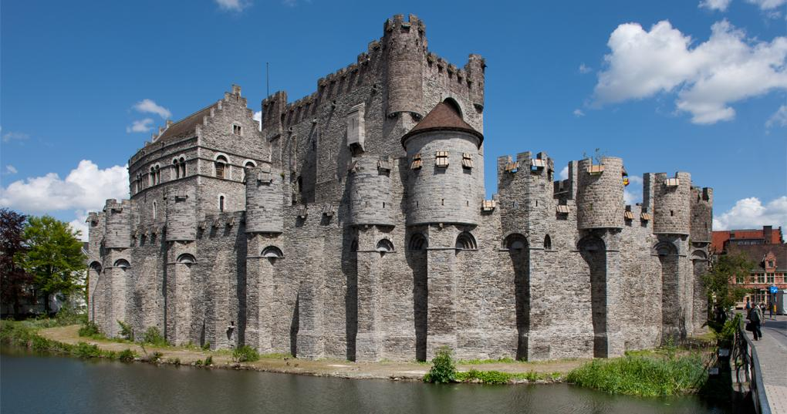
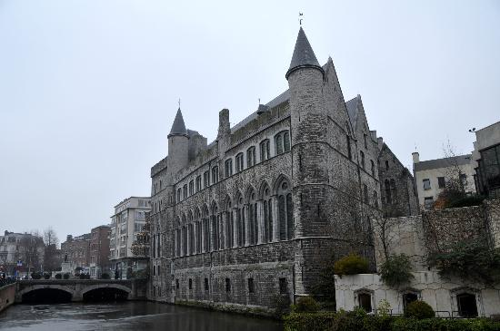
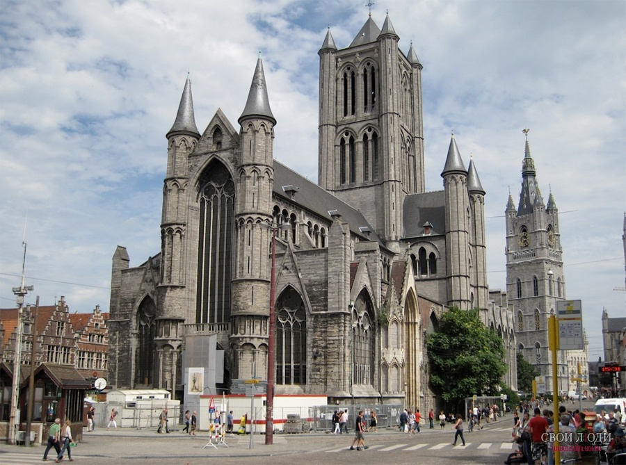
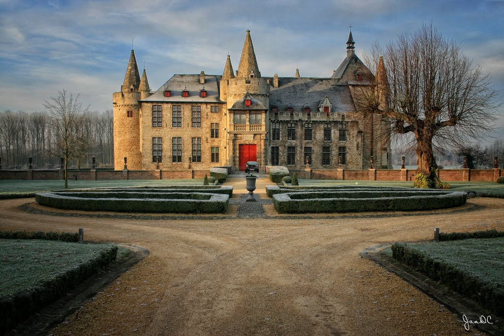
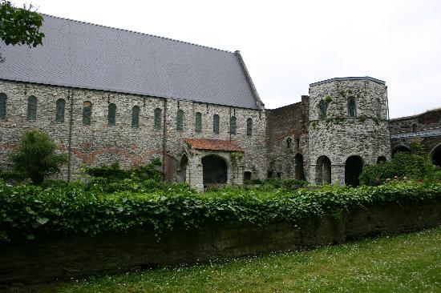
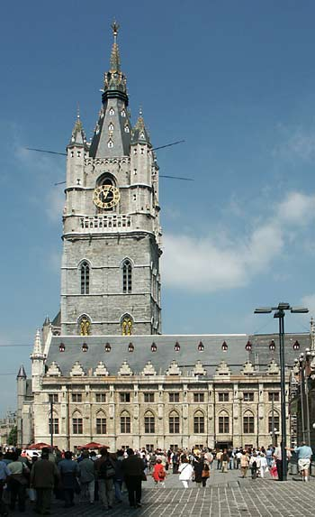
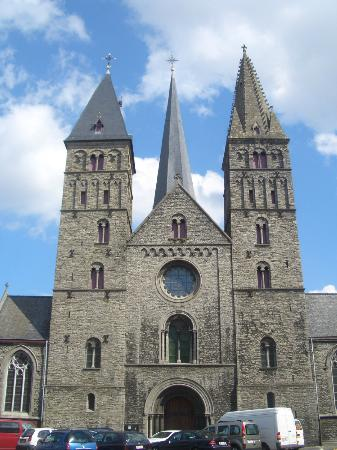
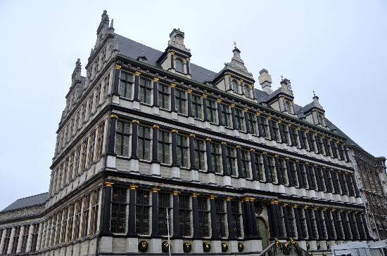
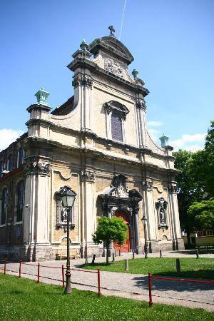

| Замок графов Фландрии (Gravensteen) |
Гравенстен был построен в 1180 году и является единственным средневековым замком во Фландрии, оборонительная система которого сохранилась практически нетронутой до настоящего времени. На протяжении нескольких веков замок использовался графами Фландрии в качестве резиденции. Позднее Гравенстен также служил монетным двором, местом проведения судебных заседаний, тюрьмой и текстильной фабрикой. |
9:00-17:00 |
4€ |
Sint-Veerleplein 11, 9000 Gent как добраться |
gravensteengent.be википедия |
 |
| Замок Герерда Дьявола (Geeraard de Duivelsteen) |
Замок Герерда Дьявола находится примерно в 800 м к юго-востоку от Графского замка.В 14 веке замок стал собственностью города. Затем, в разное время замок служил оружейным складом, монастырем, школой, тюрьмой и даже домом для умалишенных. Он также играл важную роль в защите гентского торгового порта Portus Ganda, стоявшего у истоков формирования города.В конце 19 века он был выкуплен государством, и после пристройки нового крыла в 1904 году в нем поместился государственный архив. Тогда же рядом с замком был разбит небольшой сад. Подземный этаж замка охватывает площадь около 560 кв. м, являясь, таким образом, одним из самых больших в Бельгии. |
только снаружи |
|
Geraard de Duivelstraat 1, Gent |
|
 |
| Кафедральный собор Св. Бавона (St. Bavo's Cathedral) |
Современное грандиозное здание выполнено в стиле "готика", но некогда – в 942 году, на его месте стояла лишь маленькая деревянная церквушка. Судя по всему, Святой Бавон был весьма почитаем жителями Гента, так как церкви в его честь возводились с каждым разом всё больше и красивее. Главная достопримечательность собора – Гентский алтарь. Алтарь принадлежит кисти братьев Губерта и Яна ван Эйк и помимо своей художественной ценности знаменит ещё тем, что в его написании использовались новые составы масляных красок. Завоеватели, проходящие через земли Гента, не раз пытались уничтожить алтарь, а австрийский император приказывал "одеть" изображённых нагими Адама и Еву. Сегодня оригинал хранится под стеклом, а на всеобщее обозрение выставлена лишь копия. |
8:30-17:00 |
4€ |
Hoofdkerkstraat 1, Gent |
sintbaafskathedraal.be |
 |
| Laarne Castle |
|
? |
? |
Laarne Castle, Eekhoekstraat 5, 9270 Laarne |
slotvanlaarne.be |
 |
| St Bavo's Abbey (руины) |
|
14:00-18:00(пт-вс) |
? |
Voorhoutkaai/Spanjaardstraat, Gent |
|
 |
| Belfort Gent |
Белфорт был символом самостоятельности и независимости города Гента. Его строительство началось в 1313 году. |
10:00-18:00 |
3.75€ |
Belfort van Gent, Gent |
belfortgent.be |
 |
| St James' Church |
|
? |
0€ |
Bij Sint-Jacobs, Gent |
|
 |
| Ghent Town Hall (Stadhuis) |
|
? |
5€ |
Stadhuis, Botermarkt 1, Gent |
|
 |
| Our Lady Ter Hoyen Beguinage |
Люди спрашивают меня, где вы можете найти места, которые выдыхают спокойствие. Этот beguinage - превосходное место, чтобы прогуляться через мощеные улицы, прочитать книгу по скамье или лежать на зеленом пастбище. Этот beguinage был основан в 1234, но большинство зданий с 17-ого столетия. |
6:30-22:00 |
0€ |
Lange Violettestraat 235, Gent |
http://www.kleinbegijnhof-gent.be/ |
 |